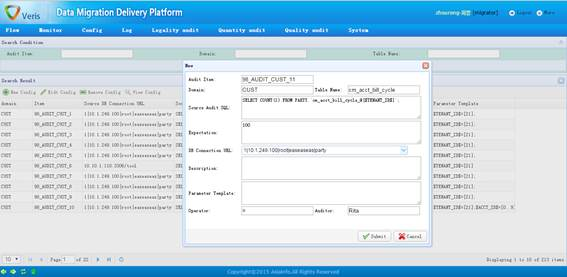

合法性稽核控件业务配置页面
功能描述：
此处TABLE NAME没有存在的必要。
合法性稽核控件会通过DB Connection URL连接上数据库，在该数据库上执行Source Audit SQL语句，将执行结果与Expectation进行Operator比对，结果为真则表示稽核通过，否则为稽核不通过；若连接数据库失败或者SQL语句执行失败，则稽核失败。
合法性稽核控件业务配置页面为合法性稽核控件提供业务规则配置接口，其中，Audit Item、Domain、Table Name、Source Audit SQL、Expectation、DB Connection URL、Operator、Auditor为必填项；其中各项填写的内容可为或者包含变量，变量的书写格式和注意事项见变量格式。